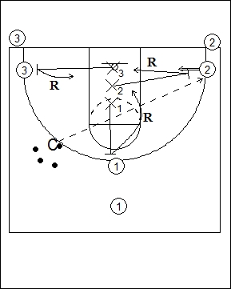

Catégorie : REBOND (Reb-15)
Déroulement
- Trois joueurs en attaque, un face à l’anneau et deux vers la baseline. Les trois défenseurs sont alignés dans la raquette.
- Le Coach passe à un des attaquants (par exemple ici, passe à 2), qui shoote immédiatement. Les trois défenseurs sortent sur leur homme et effectuent le rebond défensif, les attaquants disputant le rebond offensif; si ceux-ci l’emportent, on joue le trois contre trois à fond.
- Après rebond ou ballon gagné par les défenseurs ou panier marqué, les attaquants vont en défense et les défenseurs vont dans les files d’attente.
Coaching points
- Ce drill peut aussi être considéré comme un exercice de travail de la vitesse de réaction. Dans ce cas, on peut placer les défenseurs en triangle dans la raquette. Au moment de sa passe à un attaquant, le Coach crie le numéro du défenseur qui doit sortir sur le shooteur, les deux autres défenseurs réagissant sur les attaquants restants.